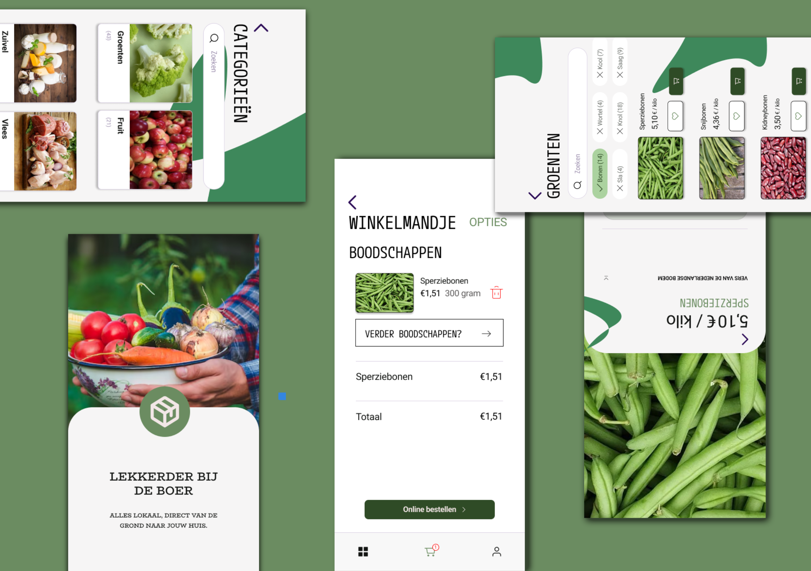
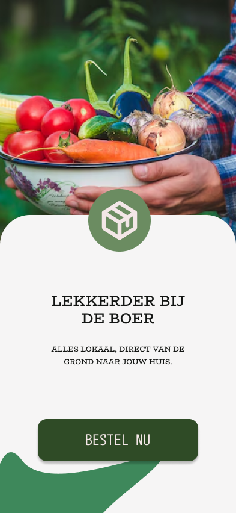
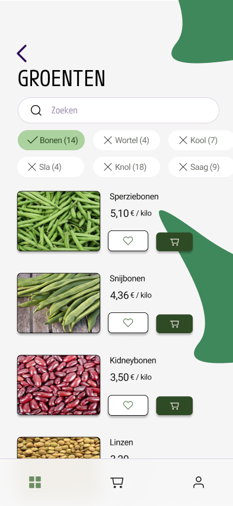
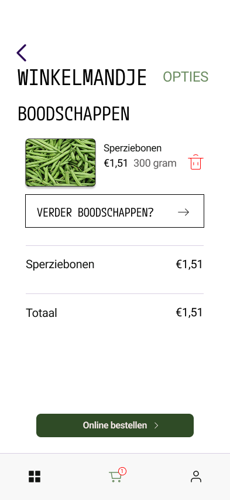

Overzicht project

Pakkende zin die het probleem vertelt
Design Proces
Onderzoek
Collaborated with health professionals to understand which data points are most valuable for daily health tracking. Conducted research on accessible design for health apps.
Ideevorming
Explored various ways to represent health metrics through simple, intuitive metaphors. Developed a gamified reward system for achieving wellness goals.
Wireframe
Implemented high-contrast visuals, adjustable font sizes, and voice-over support. Focused on creating a clear hierarchy for critical health alerts.
Visual Design
Het begon bij mij met het maken van een kleur palet voor de app. Ik wou iets doen met groen, want naar mijn mening associeer ik dat met boerderij en natuurlijke producten. Dit was de branding die mij het meeste mee gaf.
Kleurpalet & Typografie
Sitemap
Conclusie
Tekst Conclusie


